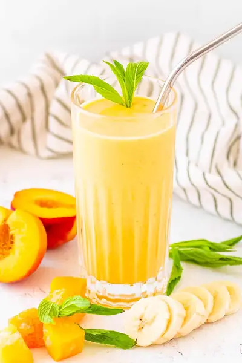

Banana Peach Smoothie

Ingredients
- 2 peaches (you can also use frozen peaches when summer is over)
- 1 small to medium sized banana
- 6-8 frozen mango chunks (about ⅓ cup)
- ¼ cup lowfat, plain organic Greek yogurt
- ⅛ cup freshly squeezed (or regular all-natural orange juice )
- ⅛ cup water (or unsweetened coconut water - use more than ⅛ cup for a thinner smoothie)
Steps
- Put all ingredients in a blender, blend until fully combined and smooth.
- Serve immediately.
Recipe by Anjali Shah · The Picky Eater, from The Picky Eater. Saved here for personal use; the original has the full notes, tips and photos. Open original